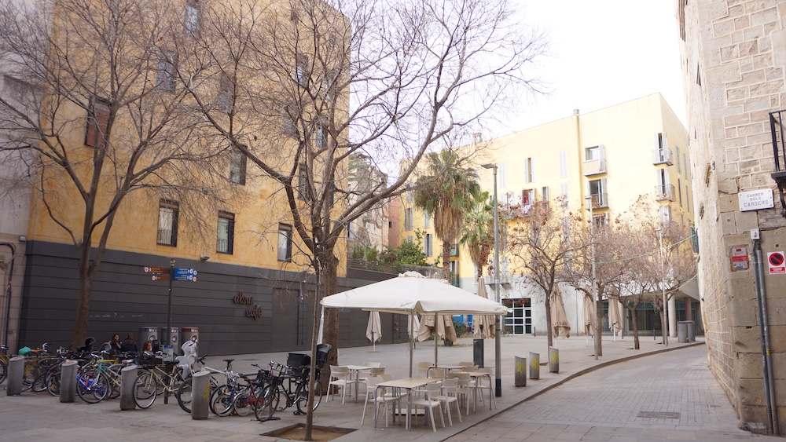
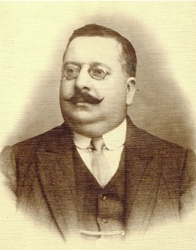
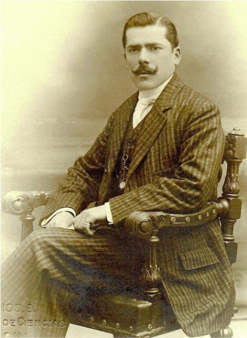

Fonollar, 30 4t (1868-1870)
Fonollar, 3 4t (1870-1874)
Història familiar
La família deixa l’agitada plaça de Sant Agustí Vell per tornar als seus orígens al carrer del Fonollar, en dues adreces diferents i molt properes.
El 6 d’abril de 1868 neix Artur Godes Caballeria, el nostre avantpassat comú. L’alegria dura molt poc: un mes més tard mor Vicent, amb tot just dos anys.
Un parell d’anys més tard, el 2 de novembre de 1870, neix Ramona. I el 18 d’octubre de 1872 neix Pau Godes Caballeria, que més endavant iniciarà la branca dels Godes de Sarrià.
Artur Godes Caballeria

Artur va ser batejat l’11 d’abril de 1868 a la Catedral de Barcelona.
Es va casar amb Emília Hurtado Giró el 23 de juny de 1894 a la Basílica de Santa Maria del Mar de Barcelona. Junts van tenir set fills: Emili, Ernest, Rosa, Mercè, Josep Maria, Ramon i Artur.
Al llarg de la seva vida va viure en diverses localitzacions de Barcelona fins que el 1908 la família es va traslladar a Sant Gervasi.
Músic, pianista i compositor, professionalment també va ser tenor del Liceu i va exercir com a mestre de capella a Santa Maria del Mar i la Bonanova.
Va morir a causa d’encefalomalàcia, una hemorràgia cerebral, el 9 de març de 1925, a l’edat de 56 anys.
Pau Godes Caballeria

Pau va néixer el 18 d’octubre de 1872.
Es va casar amb Anna Terrats Bertrán el 9 de novembre de 1895 a l’església de Sant Francesc de Paula de Barcelona. Junts van tenir dos fills: Pasqual Godes Terrats i Maria Godes Terrats.
Músic, tenor i poeta, va seguir la tradició musical de la família Godes. Va formar part del “Lo Mirall del Dia” entre 1906 i 1911 i de “La Unión” entre 1912 i 1916.
També va treballar com a cap d’estació de Sarrià, fet que reforça el seu vincle amb aquella zona, iniciador de la saga Godes a Sarrià.
Va morir el 18 de setembre de 1965, amb 92 anys, al carrer de Pedró de la Creu, 5, Barcelona.
Context Espanya
Durant aquests anys, Espanya viu el Sexenni Democràtic o Revolucionari, un període d’inestabilitat política que s’estén fins a la Primera República, entre 1873 i 1874.
El cicle es tanca amb el pronunciament de Martínez Campos, que restaura la monarquia borbònica.
Context Barcelona
Barcelona va ser un epicentre d’agitació política, social i econòmica a Espanya.
Va ser una època de gran auge del moviment obrer a la ciutat. S’hi van celebrar els primers congressos obrers i va créixer la influència de les idees internacionalistes, anarquistes i socialistes, davant del republicanisme federal.
Consulta de l'Arxiver
Com es va tancar el Sexenni Democràtic, el període que la família va viure en aquesta casa?